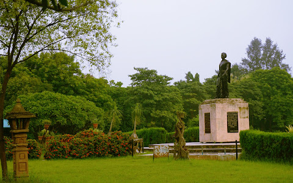
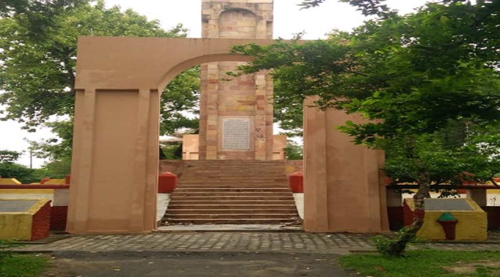
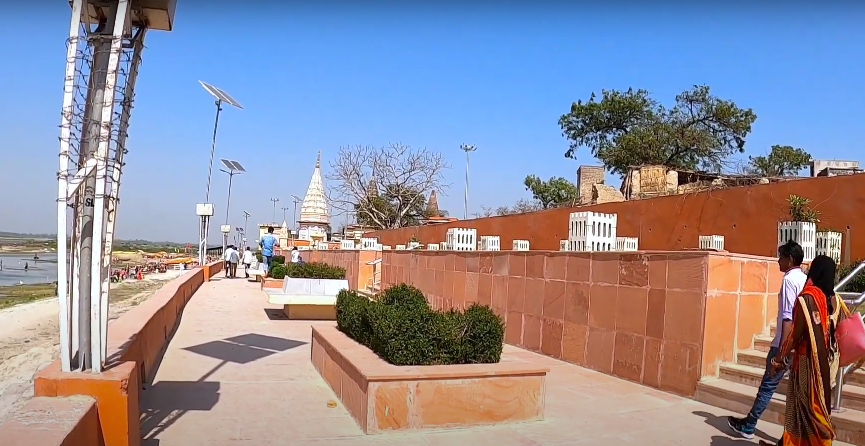
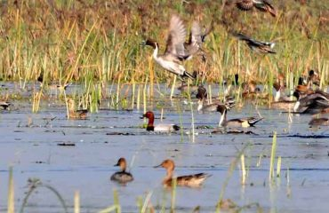
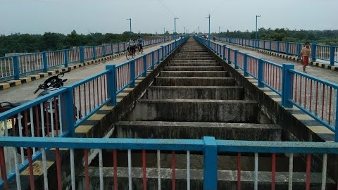
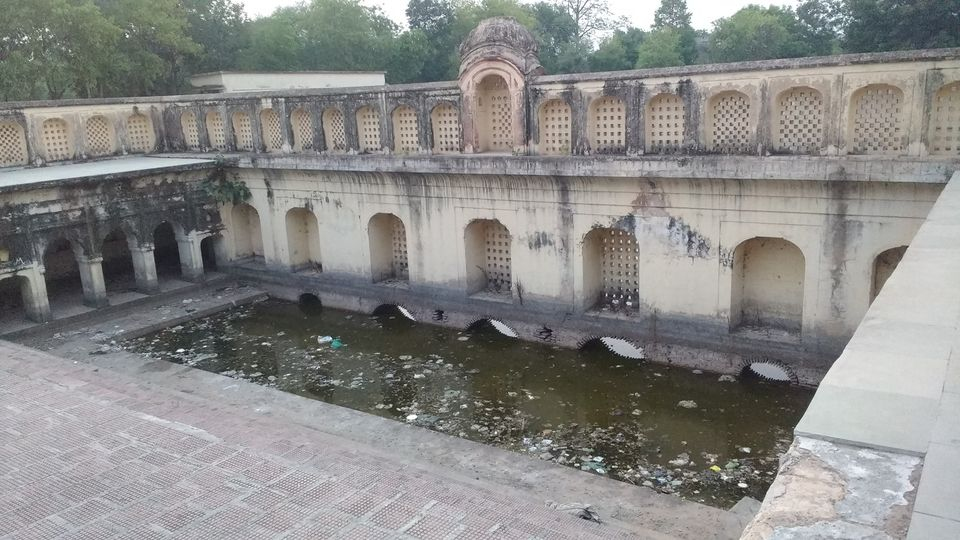

Indira Garden
Statue of Smt. Indira Gandhi at Botanical Garden Indira Gandhi Memorial Botanical Garden was established in the year 1986 in order to restore the ecological balance. The garden is situated on the left side of Lucknow-Varanasi highway. This garden is situated on the northern bank of sai river. In the west of the garden Raebareli- Allahabad railway Line is running which is parallel to Lucknow- Varanasi highway.

Shaheed Smarak
Government Freedom Struggle Museum, Meerut was established in 1997. It is located in the Shaheed Smarak compound on Delhi Road, about 6 km north-east from the city railway station and at a distance of about 200 meters from the Delhi Bus Station. Visitors can stay in various guesthouses, private lodges and hotels.

Dalmau
Dalmau is situated on the banks of Holy Ganga and is famous since ancient times. It has been the Historical town of the district. Prominent palces at Dalmau are King Dal’s fort, Bara Math, Mahesh Giri Math, Nirala memorial Institute, A well constructed by Ebrahim Sharki, Palace of Nawab Shuza-ud-daula, Baithak of Alhaa Udal, Dalmau Pump canal etc

Samaspur Bird Sanctuary
Samaspur Bird Sanctuary is situated in Rohaniya Development block of the district, about 122 k.m from Lucknow on Lucknow-Varanasi highway. It was established in 1987 on a total area of about 799.371 hectare.

Behta Bridge
Aqueduct at Behta This Bridge is situated in the outskirts of the Raebareli city. The important thing of this Bridge is that at this place Sharda canal crosses the Sai river. An aqueduct has been constructed and the canal flows in the duct.

Revtiram Water dam
Revtiram Ka Talaab (Tourist attraction) is located in Rāe Bareli, Uttar Pradesh, India. Address of Revtiram Ka Talaab is Revtiram Ka Talaab, Raebareli, Uttar Pradesh 229316. Revtiram Ka Talaab has quite many listed places around it.